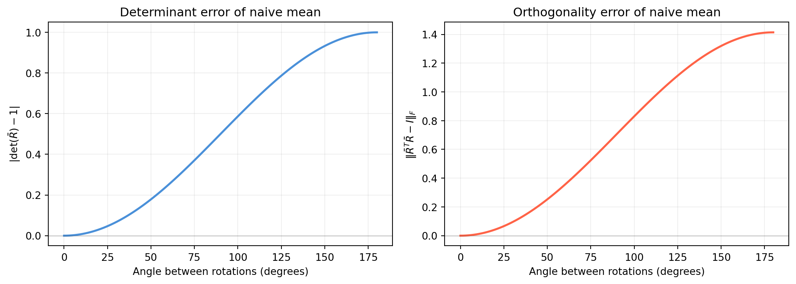

import numpy as np
import matplotlib.pyplot as plt
from scipy.spatial.transform import Rotation
rng = np.random.default_rng(42)
n_pts = 120
thetas = np.linspace(0.0, np.pi, n_pts) # shape (120,)
det_err = np.zeros(n_pts) # shape (120,)
ortho_err = np.zeros(n_pts) # shape (120,)
axis = np.array([1.0, 1.0, 0.0]) / np.sqrt(2.0) # fixed axis
for i, th in enumerate(thetas):
R_a = np.eye(3) # shape (3, 3)
R_b = Rotation.from_rotvec(th * axis).as_matrix() # shape (3, 3)
Mm = (R_a + R_b) / 2.0 # shape (3, 3)
det_err[i] = abs(np.linalg.det(Mm) - 1.0)
ortho_err[i] = np.linalg.norm(Mm.T @ Mm - np.eye(3))
fig, axes = plt.subplots(1, 2, figsize=(11, 4))
ax = axes[0]
ax.plot(np.degrees(thetas), det_err, color='#4a90d9', lw=2)
ax.set_xlabel('Angle between rotations (degrees)')
ax.set_ylabel(r'$|\det(\bar{R}) - 1|$')
ax.set_title('Determinant error of naive mean')
ax.grid(alpha=0.2)
ax.axhline(0, color='#333333', lw=0.4, alpha=0.5)
ax = axes[1]
ax.plot(np.degrees(thetas), ortho_err, color='tomato', lw=2)
ax.set_xlabel('Angle between rotations (degrees)')
ax.set_ylabel(r'$\|\bar{R}^T\bar{R} - I\|_F$')
ax.set_title('Orthogonality error of naive mean')
ax.grid(alpha=0.2)
ax.axhline(0, color='#333333', lw=0.4, alpha=0.5)
plt.tight_layout()
plt.show()
idx90 = np.argmin(np.abs(np.degrees(thetas) - 90.0))
print(f"At 90-deg separation: det_err = {det_err[idx90]:.4f}, ortho_err = {ortho_err[idx90]:.4f}")
At 90-deg separation: det_err = 0.4934, ortho_err = 0.6978